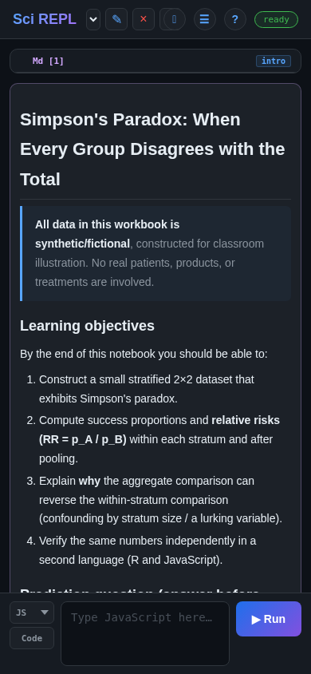

Belajar sambil praktik
Impor sendiri berkas buku kerja
Sudah memiliki berkas buku kerja, atau tidak dapat menemukan pelajaran di Jelajahi? Simpan berkas tersebut ke perangkat Anda, lalu gunakan Menu → Impor Berkas untuk menambahkannya ke SciREPL. Panduan singkat ini menggunakan Simpson's Paradox dari cabang GitHub main katalog; Anda tidak perlu memasang paket atau menulis kode untuk mengimpornya.
SciREPL mengimpor dua format notebook: .srwb, format buku kerjanya sendiri, dan .ipynb, format notebook Jupyter. Contoh ini menggunakan .srwb; catatan format di bawah menjelaskan perbedaan perilaku eksekusi impor Jupyter.
Tangkapan layar Menu adalah tangkapan Android nyata pada Samsung Galaxy S24+, yang memperlihatkan SciREPL Free 1.4.0-debug, bukan penginstalan Play Store. Tangkapan layar buku kerja yang diimpor adalah tangkapan peramban Chromium terpisah dari Free 1.4.0 pada viewport berukuran seluler; ini bukan bukti impor pemilih berkas Android. Keduanya diambil pada . Edisi, versi, dan pemilih berkas lain mungkin menata kontrol secara berbeda. Contohnya adalah berkas simpsons-paradox.srwb berbahasa Inggris dari Katalog SciREPL cabang main sebagaimana ditinjau untuk panduan ini; cabang tersebut dapat berubah. Detail tangkapan dan sumber (Halaman referensi bahasa Inggris) mencatat dimensi gambar yang tepat dan hash berkas yang ditinjau.
Langkah 1
Simpan berkas buku kerja ke perangkat Anda
Di GitHub, cabang main dapat berisi buku kerja atau pembaruan yang belum ada dalam rilis katalog stabil terbaru yang ditampilkan oleh Jelajahi. Rilis katalog berubah secara independen dari rilis aplikasi. Impor berkas langsung memungkinkan Anda mencoba buku kerja tepercaya tanpa menunggu kemunculannya di Jelajahi.
- Lihat Simpson's Paradox di GitHub, lalu unduh berkas buku kerja sebenarnya (.srwb). Tautan kedua membuka berkas mentah, bukan halaman web GitHub.
- Jika peramban Anda menampilkan berkas sebagai teks alih-alih mengunduhnya, gunakan tindakan simpan/unduh peramban. Simpan berkas buku kerja itu sendiri, bukan tangkapan layar atau halaman HTML.
- Pertahankan nama berkas
simpsons-paradox.srwbdan ekstensi.srwb-nya. Perhatikan tempat penyimpanannya: Android umumnya menggunakan Downloads; di desktop mungkin berupa Downloads atau folder yang Anda pilih.
Ini bukan unduhan rilis yang disematkan. main adalah cabang pengembangan: konten dan sel berkas dapat berubah setelah tangkapan layar ini diambil. Berkas yang Anda simpan adalah salinan lokal; perubahan GitHub di kemudian hari tidak memperbarui tab yang diimpor secara otomatis.
Mengunduh bukanlah mengimpor. Menyimpan berkas akan menempatkannya di perangkat Anda; ini belum membuka buku kerja di SciREPL. Anda tidak perlu membukanya di editor teks atau menaruhnya di tampilan Berkas SciREPL. Langkah berikutnya memilih berkas yang diunduh tersebut.
Jika Anda sudah memiliki berkas .srwb tepercaya dari orang lain, gunakan berkas tersebut dan lewati pengunduhan contoh. Judul buku kerja dan jumlah selnya akan berbeda dari pemeriksaan di Langkah 3.
Langkah 2
Temukan Menu dan pilih Impor Berkas
- Kembali ke SciREPL. Pada baris header di bagian atas aplikasi, temukan ☰ Menu, tombol dengan tiga garis horizontal, lalu ketuk atau klik tombol tersebut.
- Pilih 📂 Impor berkas (misalnya .srwb, .ipynb, .csv, .py, .zip). Jika menu lebih tinggi dari layar, gulir di dalam menu untuk menemukannya.
- Di Android: pemilih berkas sistem akan terbuka. Cari di Downloads, atau telusuri tempat Anda menyimpan berkas tersebut. Pilih
simpsons-paradox.srwb. Pemilih tersebut merupakan bawaan Android, sehingga tata letaknya dan kontrol pemilihan atau Buka akhir bergantung pada perangkat Anda. - Di desktop: gunakan pemilih berkas untuk menemukan folder yang Anda pilih saat mengunduh. Pilih
simpsons-paradox.srwbdan konfirmasikan pilihan tersebut. Gunakan cara ini alih-alih mencari layar Downloads Android. - Kembali di SciREPL, tunggu hingga impor selesai. Jika menu masih terbuka, tutup menu untuk melihat buku kerja.
Buku kerja bukanlah pengunggahan berkas data. Mengimpor berkas .srwb akan menambahkan buku kerjanya sebagai tab terpisah, atau beberapa tab terpisah jika berkas berisi beberapa buku kerja. Tab Anda yang sudah ada tetap dipertahankan. Tindakan ini tidak memasukkan buku kerja ke tampilan Berkas, dan tidak menggantikan buku kerja Anda saat ini.
Langkah 3
Periksa buku kerja baru sebelum menjalankan apa pun
- Cari Simpson's Paradox di pemilih buku kerja. Pilih tab baru tersebut jika belum terpilih. Pengantar buku kerja ini berjudul Simpson's Paradox: When Every Group Disagrees with the Total.
- Baca pengantar dan gulir ke seluruh sel. Versi yang ditinjau untuk tangkapan layar ini memiliki tujuh sel: tiga sel teks, tiga sel R, dan satu sel JavaScript. Versi yang lebih baru di
mainmungkin berbeda. - Temukan sel R bernama
data,compute, danviz, secara berurutan. Sel JavaScript bernamajs_checkdan merupakan pemeriksaan terpisah yang bersifat opsional. Baca teks penjelasan serta kodenya.

Impor tidak berarti Jalankan untuk .srwb. SciREPL tidak mengeksekusi kode saat Anda mengimpor berkas .srwb, bahkan jika eksekusi otomatis diaktifkan untuk impor lainnya. Periksa kode dari sumber yang tidak dikenal atau tidak tepercaya sebelum memilih Jalankan atau Jalankan semua sel.
Impor .srwb biasa saat ini menghapus output sel kode yang tersimpan, bahkan ketika berkas memuatnya. Teks Markdown tetap dipertahankan dan dirender, itulah sebabnya pengantar langsung muncul. Untuk membuat ulang bagan atau gambar lain yang dihasilkan oleh kode, jalankan kembali sel kodenya, dengan sel yang dependen secara berurutan. Impor tidak memulihkan variabel runtime R aktif atau variabel runtime lainnya.
Langkah 4
Opsional: jalankan pelajaran yang diimpor
Impor manual Anda telah selesai; menjalankan kode adalah langkah terpisah. Simpson's Paradox menggunakan data pengajaran sintetis untuk menunjukkan bagaimana perbandingan di dalam kelompok dapat berbeda dari perbandingan keseluruhan. Untuk mempelajarinya, ketuk ✎ pensil pada sel kode yang tersimpan, periksa kodenya, lalu pada sel tersebut, gunakan tombol Jalankan.
- Jalankan sel R
data, lalu baca sel tekspausedan buat prediksinya sebelum menjalankancompute. Lanjutkan denganvizuntuk membuat bagan. Sel R berikutnya bergantung pada sel sebelumnya. Sel-sel tersebut menggunakan base R; Anda tidak perlu memasang paket R tambahan. - Jika Anda menginginkan pemeriksaan JavaScript terpisah, jalankan
js_check. Sel ini bersifat mandiri: tidak bergantung pada sel R dan tidak memerlukan inisialisasi R.
Eksekusi R pertama: pada SciREPL, runtime webR mungkin perlu mengunduh dan melakukan inisialisasi. Pemberitahuan jaringan/privasi mungkin muncul; baca dan setujui hanya jika Anda ingin melanjutkan. Tunggu hingga runtime siap dan periksa kemungkinan kesalahan pada sel. Mengimpor buku kerja saja belum memuat definisi R-nya.
Untuk contoh lain dengan panduan eksekusi dan pengeditan yang lebih lengkap, lihat pelajaran Markov Groups. Itu adalah buku kerja yang berbeda, dengan empat sel Python; langkah ekspornya juga mengilustrasikan cara menyimpan salinan buku kerja yang telah diedit.
Simpan salinan yang Anda kendalikan. Berkas yang diunduh adalah salinan buku kerja asli, bukan cadangan dari pengeditan selanjutnya. Ekspor salinan buku kerja untuk menyimpan perubahan Anda. Menghapus penyimpanan aplikasi atau peramban dapat menghapus pekerjaan lokal, dan sesi Android serta peramban tidak membagikan perubahan Anda secara otomatis.
Format lain dan keamanan
Ketahui apa yang dibawa berkas Anda
Notebook Jupyter (.ipynb) juga menggunakan Menu → Impor Berkas, tetapi perilaku eksekusinya berbeda dari .srwb. Jika Jalankan sel otomatis saat mengimpor buku kerja diaktifkan, impor .ipynb dapat secara otomatis menjalankan sel kode yang tidak memiliki output tersimpan.
Impor berkas notebook hanya dari sumber yang Anda percayai. Sebelum mengimpor .ipynb, buka Menu → Pengaturan → Impor & Pengeditan dan pastikan Jalankan sel otomatis saat mengimpor buku kerja dalam keadaan nonaktif (tidak dicentang). Opsi ini nonaktif secara default, tetapi periksa pengaturan Anda saat ini. Menonaktifkannya bukan jaminan bahwa sembarang notebook aman; periksa kode notebook tepercaya sebelum memutuskan secara eksplisit apakah akan menjalankannya.
Berkas data terpisah: ekspor .srwb normal tidak membawa berkas CSV terpisah atau data lain yang disimpan dalam sistem berkas virtual SciREPL (tampilan Berkas). Versi Simpson's Paradox ini membuat data sintetisnya di dalam kode, sehingga tidak memerlukan berkas data terpisah. Untuk buku kerja yang membaca CSV, ikuti langkah ekspor arsip Paket panduan CSV dan langkah membuka kembali untuk membawa dan memulihkan buku kerja beserta datanya. Arsip paket dan impor .zip berada di luar cakupan pelajaran berkas buku kerja singkat ini.
Jika ada yang tampak keliru
Periksa berkas dan tab yang dipilih
- Pemilih tidak dapat menemukan berkas: periksa daftar unduhan peramban Anda untuk melihat tempat berkas disimpan, lalu telusuri folder tersebut. Mengunduh di desktop tidak memasukkan berkas ke folder Downloads ponsel Anda.
- Nama berkas berakhiran .txt atau .html: kembali ke tautan unduhan buku kerja dan simpan berkas sebenarnya dengan ekstensi
.srwb-nya. Mengubah nama halaman HTML menjadi.srwbtidak mengubahnya menjadi buku kerja. - Anda masih melihat buku kerja lama Anda: tutup menu dan periksa pemilih buku kerja untuk melihat judul yang baru. Tab yang sudah ada tetap dipertahankan.
- Anda mengimpornya dua kali: impor lain akan menambahkan salinan lain; ini tidak memperbarui atau menggantikan tab sebelumnya. Periksa salinan mana yang sedang Anda edit sebelum membuat perubahan.
- Judul atau sel tidak cocok: pastikan Anda memilih
simpsons-paradox.srwb, bukan unduhan yang berbeda atau berkas dari pelajaran lain. Berkas dimaindapat berubah; bandingkan salinan Anda dengan berkas GitHub saat ini dan periksa kode yang tidak dikenal sebelum menjalankannya.
Untuk dasar-dasar tab buku kerja dan pengeditan sel yang tersimpan, lihat panduan antarmuka buku kerja pertama. Referensi buku kerja (Halaman referensi bahasa Inggris) menjelaskan struktur buku kerja dan jenis sel.